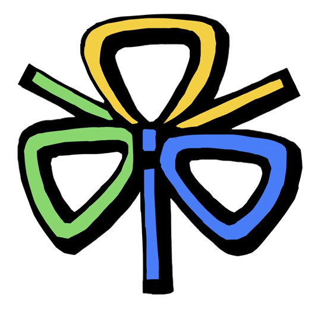
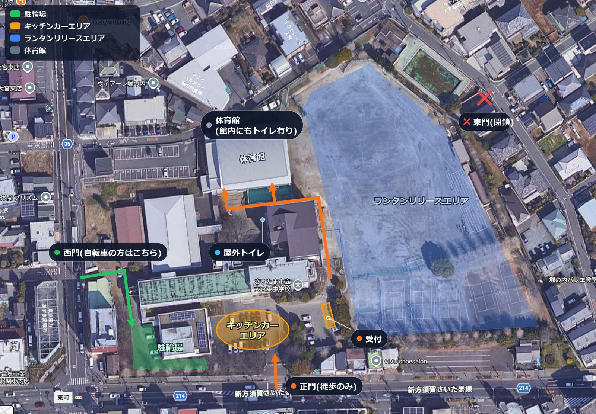
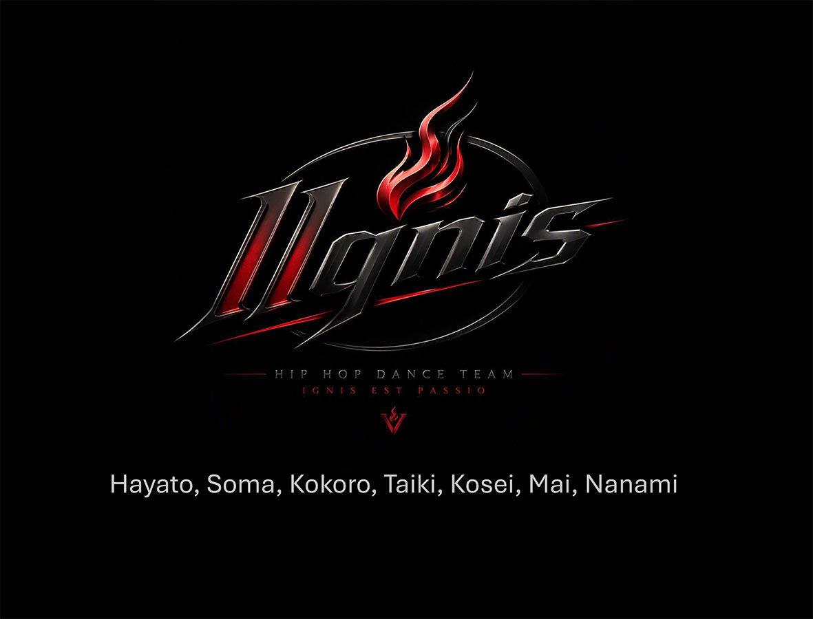

あいにくの天候となりましたが、ご来場いただいた皆様、誠にありがとうございました。
ご協賛いただいた皆様、地域の皆様、東中もっとよくし隊・PTA・ボランティアの皆様、そして全力で盛り上げてくれた東中生の力により、心に残る80周年記念事業となりましたことを深く感謝申し上げます。
※当日のイベントの様子につきましては、準備が整い次第、本サイトにてご報告いたします。
さいたま市立大宮東中学校 創立80周年記念事業実行委員会
8/29(土)の開催は、雨天・強風が予想されるため、8月30日（日）に順延となりました。タイムスケジュール等の時間変更や、キッチンカーの出店に変更が出る場合がございます。お気をつけてお越しください。

〜 想いをのせて、夜空へ。80年の歴史を, 光でつなぐ 〜
2026年 8月29日（土）
17:00 〜 19:30（15:00開場）
荒天時は翌 30日(日)に順延さいたま市立大宮東中学校 校庭
※駐輪場は給食室裏（西門からお入りください）
入場・観覧自由（無料）
当日販売ランタン：限定100基 @3,500円（16:00受付開始）
西門・正門からの入り方、駐輪場やキッチンカーエリア、ランタンのリリースエリアなど、当日の会場内の様子です。タップで拡大してご確認いただけます。

※東門は閉鎖されています。ご入場は正門（徒歩のみ）または西門（自転車の方）をご利用ください。
昇降口前駐車場にて、地域のキッチンカーや卒業生(OB)の屋台が並びます！ ※アトラクション前の15:00〜17:00が空いていてオススメです。
※順延に伴い、キッチンカーの出店内容に変更が出る場合がございます。
在校生へのランタン引渡し（〜17:00）と、当日販売ランタン（限定100基）の受付・絵付けがスタートします。
東中生・OB・地域の皆様による豪華ステージ！
※順延の場合、アトラクション・パフォーマンスは中止または変更となります。
校庭にて、飲食や歓談をゆっくりお楽しみいただく時間です。
校庭にて、笑いあふれるバルーンパフォーマンスをお届けします。
来賓挨拶、全員のランタンが一斉に温かな光を灯す感動の瞬間です。
校庭いっぱいに、願いをのせた光の群れが美しく舞い上がります。
地域のキッチンカーや東中卒業生（OB）の屋台、計7店舗の出店が決定しました！やきそば、から揚げ、かき氷、クレープなど、お祭り気分を楽しめるメニューが勢ぞろいです。
キッチンカーエリア付近に体育祭等で使用しているテントを増設し、雨に濡れにくい飲食スペースを拡充する予定です。キッチンカー・OB屋台のグルメを、ぜひごゆっくりお楽しみください。
17:00〜 東中アトラクションステージ（体育館）に出演！
※順延の場合、アトラクション・パフォーマンスは中止または変更となります。
メンバー：6人
とにかく演奏聴いてください！一緒に盛り上がってください！
大宮小の「ミニライブ」文化への出場をきっかけに結成。楽しみながらメンバーを増やし、現在に至る6人組バンド。
母校の80周年に駆けつけた、フリースタイルバスケの先輩たち
大宮区を拠点に活動する日本のプロ・フリースタイルバスケットボールチーム。さいたま観光大使も務め、国内外のイベントやSNSで高い人気を誇る実力派パフォーマー。音楽に合わせたダイナミックなダンスや、アクロバティックなボールハンドリングは必見です！

メンバー：7人
踊り方もジャンルも違う7人のメンバーが魅せる最高のステージをご覧ください！ラテン語で「情熱の火」を意味するチーム名は、ランタンの暖かい光にちなんでいます。
大宮東中学校での開催にあたり、近隣の皆さまや消防、環境への影響に最大限の配慮を行っています。
火気・燃料は一切不使用。高輝度LEDバルーンですので、火災の心配が一切ありません。
ランタンはすべて手元の「糸」と「重り（ペーパーウエイト）」に繋がれており、リリース後も回収しお持ち帰りしていただきます。ゴミを地域に残しません。
当日の「天候不良・順延判断」を想定した告知切替テストです：